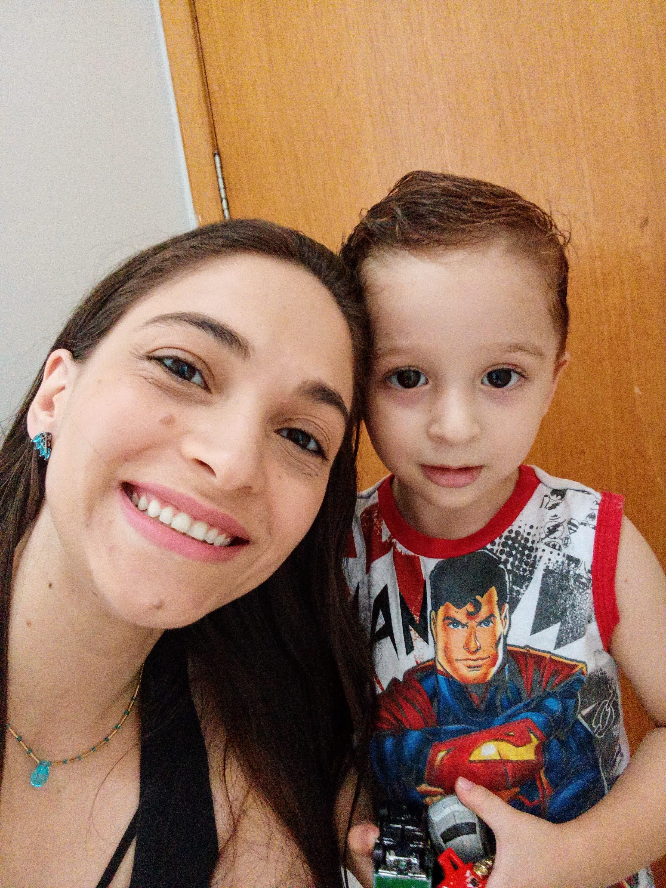

Sobre mim
Olá, sou Katturyn, uma mulher de 27 anos com uma jornada de vida não convencional. Aos 14 anos, enfrentei dificuldades na socialização que me levaram a abandonar os estudos. Em vez de continuar na escola, comecei a trabalhar em um negócio familiar.
Encontrei um refúgio para meus problemas nos videogames, onde mergulhei durante anos. Embora muitos considerassem isso apenas um passatempo, foi nos jogos que descobri minha paixão pela constante busca por conhecimento e pela resolução de problemas.
Um ponto de virada significativo ocorreu quando decidi retomar minha educação por conta própria. Passei pela prova do ENCCEJA e finalmente conquistei meu diploma de ensino médio. Isso marcou o início de uma jornada de crescimento pessoal que continua até hoje.
Minha saúde mental muitas vezes interferia negativamente em minha disciplina e foco, limitando-me de várias maneiras. No entanto, quando meu filho que atualmente tem 5 anos foi diagnosticado com autismo em 2022, minha vida tomou um novo rumo. Foi um chamado à ação para buscar meu próprio autoconhecimento, entender melhor minha mente e encontrar maneiras de apoiar meu filho da melhor maneira possível. Recentemente, estive envolvida em pesquisas médicas para receber meu próprio diagnóstico de autismo. Essa jornada de autodescoberta tem me ajudado a compreender melhor quem sou e como posso aplicar meus novos conhecimentos para lidar com as comorbidades comuns desse espectro que me afetavam e limitavam.
Em 2023, iniciei meus estudos acadêmicos em Gestão Ambiental. Além disso, estou participando de cursos de capacitação e desenvolvimento pessoal, como o #ElasNaTech. Estou incrivelmente orgulhosa de fazer parte dessa iniciativa. O ambiente colaborativo e de apoio do #ElasNaTech tem sido uma fonte de motivação constante. Acompanhar o desenvolvimento das outras alunas, sentir sua empolgação e esforço, só aumentou minha determinação para seguir adiante neste caminho. Gostaria de aproveitar esta oportunidade para expressar minha profunda gratidão às incríveis profissionais que se dedicam imensamente para proporcionar essa experiência e gerenciam minha turma, a Turma 04 - Cybelle. Muito obrigada a todas vocês. E um agradecimento especial a todas as alunas que compartilharam comigo este momento tão importante da minha vida.
Estou ansiosa para continuar minha jornada de aprendizado e autoconhecimento,de forma que eu possa continuar me superando dia após dia. Espero um dia contribuir com meus esforços para melhorias e avanços nas áreas de meio ambiente e tecnologia.
Obrigada por ter lido até aqui. Desejo a você grandes conquistas e realizações. Até mais!
PS: Não possuo redes sociais, segue o link do LinkedIn que fiz para avançar com os conteúdos dos cursos. https://www.linkedin.com/in/merlly-lima/
Créditos:
As imagens utilizadas para esta landing page foram adquiridas através das seguintes fontes:
https://www.citypng.com/png-download/21215
https://www.adobe.com/br/sensei/generative-ai/firefly.html
Editadas por mim através do editor de imagens GIMP e no Canva.